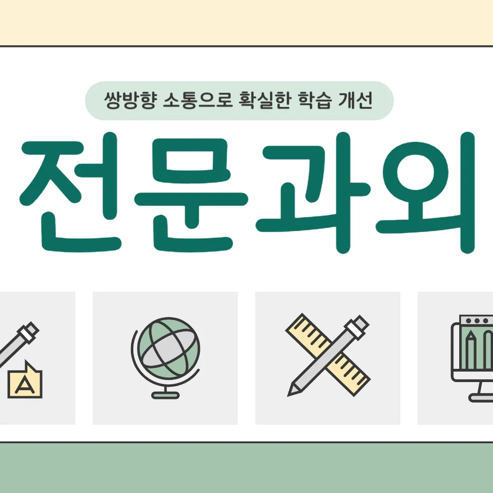

PageType : DONG
URL : /경기도과외/평택시과외/용이동과외/
지역 학습환경과 학생들의 변화
용인 지역에서 공부를 시작할 때 학생이 가장 먼저 달라지는 지점은 ‘수업을 듣는 태도’입니다. 용이동과외를 알아보는 가정에서는 보통 숙제 여부를 스스로 확인하지 못하거나, 수업 후에 무엇을 남겨야 하는지 흐릿한 경우가 많습니다. 하지만 같은 문제를 마주해도 계획이 잡힌 학생은 풀이 과정이 단단해지고, 오답을 정리하는 방식도 달라집니다. 용이동과외는 학교 시간표와 생활 패턴을 함께 보면서, 학생이 실제로 시간을 확보할 수 있는 루트를 만들어 줍니다. 그 결과 “처음엔 어렵지만, 어느 순간부터 속도가 붙는다”는 변화가 자연스럽게 나타납니다.
용이동의 학습 분위기는 학원식 단기 성과보다 꾸준함을 선호하는 편이고, 학생들도 그 흐름을 따라갑니다. 특히 시험 전후로 공부 분위기가 바뀌는 학생이 많아, 수업이 끝난 뒤의 루틴을 잡는 것이 중요합니다. 용이동과외에서는 ‘오늘 할 일’을 짧게 쪼개서 끝내게 하고, 성취 경험이 쌓이도록 돕습니다. 이 과정에서 공부습관 자체가 안정되며, 같은 시간 공부해도 집중이 오래 유지됩니다.
학부모가 많이 고민하는 부분
학부모가 가장 크게 걱정하는 건 성적보다도 “공부를 하는데 왜 성과가 보이지 않느냐”입니다. 용이동과외 상담에서도 자주 나오는 질문은 내신 준비가 막연하다는 점, 그리고 학생의 학습 태도는 괜찮은데 점수가 따라오지 않는다는 점입니다. 어떤 학생은 문제를 많이 풀지만 오답이 남아 있고, 또 어떤 학생은 정리를 꼼꼼히 하지만 핵심 단원이 반복되면서 시간이 새는 편입니다. 이런 차이를 파악해, 학생의 현재 상태에 맞춘 전략으로 연결해야 효과가 생깁니다.
또 다른 고민은 시험 기간이 시작될 때 흔들리는 패턴입니다. 평소엔 괜찮다가도 시험 전 주에 계획이 무너지는 학생이 많고, 이럴 때는 ‘의지’보다 ‘구조’가 필요합니다. 용이동과외는 시험 일정에 맞춰 학습량과 난이도를 조절하고, 학생이 무리하지 않으면서도 매일 확인할 수 있는 체크 기준을 제공합니다. 학부모는 결과를 기다리는 시간이 줄고, 학생은 노력의 방향이 흔들리지 않습니다.
학년이 올라갈수록 달라지는 공부
학년이 올라가면 같은 과목이라도 요구 방식이 달라집니다. 중간·기말에서 단순히 암기한 내용을 묻는 형태에서, 점차 사고 과정이 드러나는 문제 비중이 커지고 서술형·과정형이 확대되는 흐름이 나타납니다. 그래서 용이동과외를 찾는 학생들의 관심도 “어떤 단원을 더 해야 하느냐”에서 “어떤 방식으로 풀어야 하느냐”로 옮겨갑니다. 초반에는 단원 이해가 먼저지만, 후반으로 갈수록 시간관리와 오답 처리 속도가 성적을 가르는 핵심이 됩니다.
특히 학년이 올라갈수록 자기주도학습이 말처럼 쉽지 않습니다. 예전에 통하는 공부 방법이 중간에 깨지고, 자신이 무엇을 놓쳤는지 스스로 발견하기 어려워지기 때문입니다. 용이동과외는 학생이 스스로 점검하는 습관을 만들도록 설계하고, 같은 실수를 반복하지 않게 학습 기록을 연결합니다. 이 변화가 누적되면 ‘공부한 만큼 오르는 경험’이 자리 잡습니다.
학교생활과 내신 준비
내신은 수업 태도와 성실함이 결과로 나타나는 영역이지만, 학생 입장에서는 “학교에서 배운 걸 왜 점수로 못 바꾸지?”라는 질문이 생깁니다. 용이동과외에서는 학교생활에서 얻는 정보가 공부로 연결되게 돕습니다. 예를 들어 수업 중 필기 형태가 학생마다 다르기 때문에, 같은 필기라도 시험 대비에 맞게 재구성하는 방식이 달라져야 합니다. 수업 후에 바로 정리하는 학생과 그렇지 않은 학생은 오답을 만들 때의 속도에서 차이가 납니다.
또한 수행평가나 활동 중심 수업이 겹치면 공부 우선순위가 흔들릴 수 있습니다. 이때는 ‘내신 범위’를 고정으로 잡고, 그 안에서 우선순위를 바꾸는 연습이 필요합니다. 용이동과외는 내신 일정에 맞춰 학습 흐름을 잡아 주고, 시험 직전까지 무너지는 단원을 미리 확인하게 합니다. 결국 학교생활이 부담이 아니라 데이터가 됩니다.
자기주도학습이 중요한 이유
자기주도학습은 단순히 혼자 하는 시간이 많아지는 걸 뜻하지 않습니다. 중요한 건 학습의 방향과 점검 방식이 학생에게 내재되는 과정입니다. 용이동과외를 통해 가장 자주 변화하는 모습은 “무엇부터 해야 하는지”를 스스로 고르는 능력입니다. 예전에는 숙제를 끝내야 마음이 편했다면, 시간이 지나면서 시험 범위와 약점 단원이 연결되어 보이기 시작합니다. 그래서 공부습관이 안정되고, ‘오늘의 학습 목표’가 구체화됩니다.
특히 시험이 다가올수록 자기주도학습은 더 빛납니다. 계획표를 써도 실행이 안 되면 무의미해지는데, 용이동과외는 학생이 실행 가능한 단위로 쪼개고 매일 점검하게 합니다. “풀었는지”만 확인하는 것이 아니라, 왜 틀렸는지와 다음에 어떻게 바꿀지까지 연결할 수 있게 지도합니다. 이 단계가 되면 학생의 태도는 단단해지고, 결과도 따라오기 시작합니다.
공부 습관이 성적에 미치는 영향
성적은 단기간에만 움직이지 않습니다. 매일 쌓이는 습관이 누적되면서 시험에서 문제를 보는 시선이 달라집니다. 어떤 학생은 문제 풀이를 빨리 하면서도 검토를 건너뛰어 실수를 키웁니다. 또 어떤 학생은 검토는 하지만 오답 유형 분류가 없어 다음 시험에서 같은 틀림이 반복됩니다. 용이동과외에서는 학생의 공부습관을 관찰하고, 점수로 연결되는 행동을 중심으로 바꿉니다. 예를 들어 오답 노트를 ‘많이’가 아니라 ‘쓸모 있게’ 구성하도록 유도합니다.
시간관리도 습관의 일부로 다룹니다. 예습·복습의 비율, 문제를 풀 때의 난이도 조절, 쉬는 시간에 무엇을 하는지까지 정교하게 맞추면 집중이 회복됩니다. 용이동과외를 진행하면서 학생이 가장 자주 말하는 변화는 “공부가 어렵다기보다, 시작이 쉬워졌다”는 표현입니다. 시작이 쉬워지면 결국 꾸준함이 생기고, 그 꾸준함이 성적의 바닥을 끌어올립니다.
체크해야 할 학습 포인트
용이동과외를 선택했을 때, 단순히 수업 횟수만 보지 말고 다음 포인트를 같이 확인하면 좋습니다. 아래는 실제로 학생들이 흔들리는 지점이며, 학습 전략을 세울 때 기준이 됩니다.
- 수업 후 정리 시간이 정해져 있는지, 그리고 그 정리가 시험 범위와 연결되는지
- 오답을 ‘다시 풀기’로 끝내는지, 유형별로 다음 전략이 생기는지
- 시험 전 주에 계획이 무너질 때 대체 루틴이 있는지
- 자기주도학습이 기록과 점검으로 이어지는지(목표-실행-피드백)
이 요소들이 잡히면 내신 준비가 덜 막막해지고, 시험 기간의 긴장도 공부 방식으로 흡수됩니다. 용이동과외는 학생이 스스로 성장하는 구조를 만들기 때문에, 체크 포인트가 곧 학습 지표가 됩니다.
시간관리와 시험기간 대응
시험기간에는 공부량이 늘어나는 것보다 우선순위를 정교하게 만드는 것이 더 중요합니다. 학생들은 대체로 “되는 문제”를 먼저 풀다가 정작 점수로 이어질 취약 단원을 뒤로 미루는 경우가 많습니다. 그래서 용이동과외에서는 시험 범위를 기준으로 시간표를 재구성하고, 하루의 시작에 반드시 확인할 체크 항목을 둡니다. 이 방식은 불안감을 줄이고, 집중이 흐트러져도 다시 붙잡는 힘이 생깁니다.
또한 컨디션에 따라 같은 계획도 다르게 실행되는 학생이 많습니다. 수면 리듬이 흔들리면 독해력과 계산력이 동시에 떨어져, 문제를 봐도 ‘아는 것 같은데 틀리는’ 상태가 생깁니다. 용이동과외는 이런 변수를 고려해 학습 강도와 난이도를 조절하고, 시험 직전에도 무리하지 않는 흐름을 만듭니다. 그 결과 시험장에서 학생의 태도가 비교적 안정적으로 유지됩니다.
자주 묻는 질문
용이동과외를 하면 내신이 실제로 오를까요?
네, 다만 “단원 반복”보다 “학교 수업 내용의 시험형 변환”과 “오답 처리 방식”을 함께 잡을 때 효과가 커집니다. 용이동과외는 학생의 현재 습관을 기준으로 내신 준비 루트를 구체화합니다.
공부 습관이 약한 학생도 시작할 수 있나요?
가능합니다. 숙제만 하던 학생은 목표가 작아야 실행이 됩니다. 용이동과외는 하루 단위 실행 기준을 만들고, 자기주도학습으로 이어지게 점검합니다.
시험기간에 계획이 자꾸 깨져요. 어떻게 하나요?
계획표만 늘리는 방식은 쉽게 무너집니다. 용이동과외에서는 시험 일정에 맞춰 대체 루틴과 우선순위를 먼저 정하고, 매일 무엇을 확인할지 기준을 고정합니다.
수업은 듣는데 성적이 안 나오는 이유가 뭔가요?
수업 이해와 시험 적용 사이에 공백이 생기는 경우가 많습니다. 용이동과외는 필기·복습·오답을 시험 대비 흐름으로 연결해 그 공백을 줄입니다.
어떤 과목이든 다 맞나요?
과목별로 접근이 다르기 때문에 학생 상태에 맞춰 설계합니다. 용이동과외는 학습 태도와 시간관리부터 점검해 과목 선택과 학습 전략을 같이 맞춥니다.
